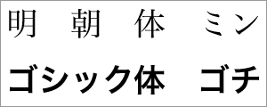
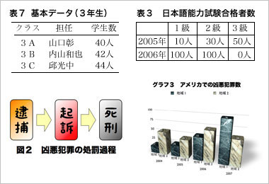
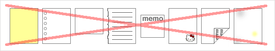
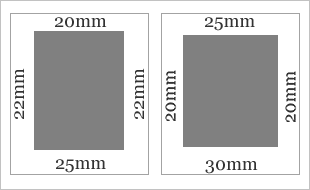
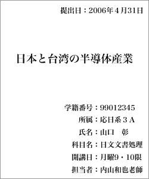
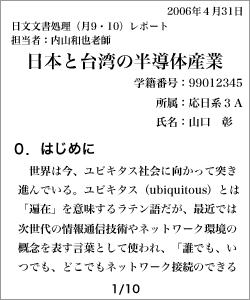
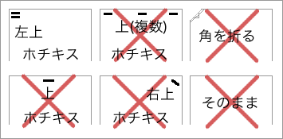
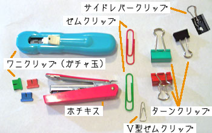
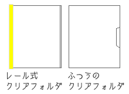
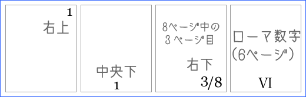

日文文書処理
レポートの作成
レポートとは
- レポート
- 調査や実験に基づいて事実やデータを報告すること
- 作文（さくぶん）
- 経験や体験に基づいた自分の意見や考えを書くこと
- 論文（ろんぶん）
- 理論に基づき自分独自の主張を論理的に述べること
レポート、作文、論文の定義
レポートは、調査や実験に基づいて事実やデータを報告するものである。
作文とは、経験や体験に基づいた自分の意見や考えを書くものである。
論文とは、理論に基づき自分独自の主張を論理的に述べるものである。
レポート、作文、論文の違い
レポートは、事実やデータを報告するものであるから、自分の考えよりも事実やデータの方が重要である。この点で、レポートは作文、論文とは異なるものである。
また、内容の独自性は、必ずなければならないというものではない。しかし、課題などでレポートにまとめた事実について自分の意見を書くように求められた場合には、独自性が必要になる。独自性のないレポートよりは、独自性のあるレポートの方が評価は高いだろう。
レポート、作文、論文の比較
| 自分の考え
じぶんのかんがえ | 客観性
きゃっかんせい | 論理性
ろんりせい | 独自性
どくじせい | 根拠となるもの
こんきょとなるもの |
| レポート | | 必要 | 必要 | あった方が良い | 調査・実験 |
| 作文（さくぶん） | 必要 | | | あった方が良い | 経験や体験 |
| 論文（ろんぶん） | 必要 | 必要 | 必要 | 必要 | 理論 |
レポートの条件
レポートで最も重要なことは、報告した事実やデータが正確だということである。
具体的には、次の３つの条件が守られていなければならない。
- 事実の認定やデータに誤りがない
- 事実の記述が公正である
- 事実やデータが恣意的に選択されていない
悪い報告の例
たとえば、次のような出来事を報告する場合、
- 学生が先生を蹴った
- 蹴られた先生がケガをした
先生が学生を蹴って、学生がケガをした。
というのは、事実に誤りのある報告である。先生が加害者で、学生が被害者だというのは、出来事の最も重要なポイントであり、誤りは許されない。
また、
学生が先生に殴る蹴るの暴行を働いて、先生がケガをした。
というのは、事実に誤りのある報告である。学生は先生を『蹴った』だけで殴ったわけではないので、事実の認定に誤りがある。結果として、内容が明らかに誇張されている。
また、
学生の足が先生に当って、先生がケガをした。
というのは、記述が公正でない報告である。内容自体には、事実に反するところはないが、これでは『学生が先生を蹴った』のかどうかがわからない（あるいは、故意に隠されている）。結果として、誤った情報を与える可能性が高いため、公正だとはいえないのである。
また、
学生が先生を蹴った。
というのは、事実が恣意的に選択された報告である。これも、内容自体には事実に反するところはないが、これでは『蹴られた先生がケガをした』ことがわからない（あるいは、故意に隠されている）。
同じく、
先生がケガをした。
というのも、事実が恣意的に選択された報告である。これでは『学生が先生を蹴った』ことがわからない（あるいは、故意に隠されている）。
このように恣意的な選択をすることによって、重要な情報が伝達されないままになってしまうのである。
不正なレポート
次のようなレポートは不正なものである。
- 内容にウソや事実の誇張がある
- 相手を誤解させようと意図している
- 不都合な事実やデータを隠している
レポートの体裁
レポートには標準的な体裁がある。
体裁について、特に指示がある場合は、その指示に従うが、指示のないときには、標準的な体裁で作成しなければならない。
体裁が整えられていないレポートは受理されないこともあるので注意すること。
標準的な書式
コンピュータで作成する場合、本文の文字は10〜12ポイントの明朝体が基本である。また、タイトルや見出しにはゴシック体を使ってもよい。

なお、文字の色は、すべて黒にするのが標準である。
文字サイズの設定の例：
- タイトル＝18ポイント（明朝体、太）
- サブタイトル＝16ポイント（明朝体、太）
- 署名＝14ポイント（明朝体）
- 所属＝12ポイント（明朝体、太）
- 本文＝12ポイント（明朝体）
- 見出し＝14ポイント（ゴシック体）
見本：
哈日ブームと新外来語
—新外来語の成立背景について—
鍾 季儒
育達商業技術學院應用日語系
１.なぜ外来語が必要なのか
文法と音声に比べて、語彙は言語の中で一番変化に応じて変わる部分だと言われている。魏永紅・魏永佳（1996: 51）が「歴史の発展、社会の変化、地域間の差異などの変化はすべて語彙によって反映するようになっている」と述べているように、語彙の変化は色々な分野の変貌を物語っている。
世界諸言語には多かれ少なかれ、その言語における外来語がある。外来語は世界各国の文化交流につき、必ず生じる現象である。（以下略）
図版（イラストやグラフ）
表、グラフ、イラスト、写真、地図など、視覚的に情報を表現するものを図版という。
なお、文字の色は、黒が標準だが、図版はカラーでも構わない。
図版には、必ず種類ごとの通し番号をつける。
グラフ１ → グラフ２ → グラフ３
表１ → 表２ → 表３
図１ → 図２ → 図３
写真１ → 写真２ → 写真３

また、それぞれの図版には、通し番号だけでなくタイトルをつけた方がよい。タイトルは、表やグラフの場合は上に、写真や図の場合は下に書くことが多い。
レポートの本文では、通し番号で指すようにし、図版が何を示しているのかもできるだけ本文で説明した方がよい。たとえば、
- 「３年生の各クラスの基本データを表７に示す。」
- 「表３は、2005年と2006年の日本語能力試験合格者数を示したものである。」
- 「図２に示したように、凶悪犯罪の処罰は、逮捕、起訴、死刑の順で行なわれる。」
- 「アメリカでの凶悪犯罪は、『地域１』に分類される地域で急増しているのである（グラフ３参照）。」
のように書けばよい。
標準的な用紙
コンピュータで作成する場合は、Ａ４サイズの白色プリンタ用紙（共用紙）を使う。
手書きの場合は、専用のレポート用紙を使う。
- レポートに使える紙
-
- Ａ４サイズ・白・プリンタ用紙
- Ａ４サイズ・白・レポート用紙
- レポートに使えない紙
-
- カラーのもの
- キャラクターなどのイラストがあるもの
- ノートを切ったもの
- メモ用紙
- 裏紙（プリントされた紙の裏面）
- 穴のあるもの（ファイリング用紙、ルーズリーフ）
- 大きさが変則的なもの
- 厚すぎたり薄すぎるもの
- 汚いもの

余白
コンピュータで作成する場合は、余白を適切な大きさに設定する。上の余白より下の余白を少し大きくするのが、見やすくするポイントである。
手書きの場合は、レポート用紙の余白に従う。
Ａ４サイズでの余白の設定の例：
- 上：20mm、右：22mm、下：25mm、左：22mm
- 上：25mm、右：20mm、下：30mm、左：20mm

プリント
コンピュータで作成する場合は、標準モード以上の品質でプリントする。
手書きの場合は、黒のペンかボールペンを使う。ブルーブラックの万年筆は使ってもよいが、青色のボールペンなどは避ける。鉛筆やシャープペンシルは使わない。また、文字はできるだけていねいに書く。
表紙
レポートには表紙をつけた方がよい。表紙には、次のような内容を記す。なお、表紙にイラストなどは不要である。
題名、科目名（担当者）、所属、学籍番号、氏名、提出日または作成日
また、表紙をつけない場合は、１ページ目の先頭に同じ内容を記す。
いずれの場合も、書き方に特別なきまりはないので、必要な項目をわかりやすく（見やすいように）書けばよい。


表紙をつける場合(左)とつけない場合(右)の書き方の例
複数枚のレポート

レポートがバラバラにならないように、留める。左上をホチキス（ステイプル）で（２カ所）留めるのがよい。角を折っただけでは、留めたことにならない。
クリップ（ゼムクリップ、Ｖ型ゼムクリップ、ワニクリップ［ガチャ玉ともいう］、ターンクリップ、サイドレバークリップなど）で留めてもよいが、ホチキスで留めた方が確実である。


なお、クリアフォルダ（クリヤーホルダ）を使うときは、レールクリアフォルダ（レール式クリヤーホルダー）にする。レール式でないクリアフォルダ（ふつうのクリアフォルダ）を使うときには、左上をホチキス（ステイプル）などで留める。
また、右上か下（右か中央）のマージンにページ番号を記す（プリントした後で手書きで加えてもよい）。ページ番号は、算用数字がふつうだが、ローマ数字でもよい。なお、『ページ数/総ページ数』の形でもよい。
